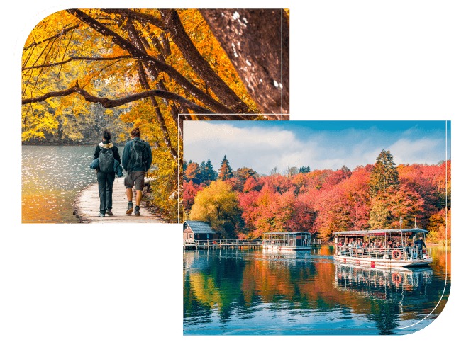
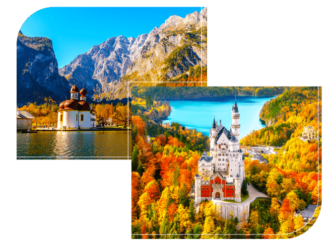
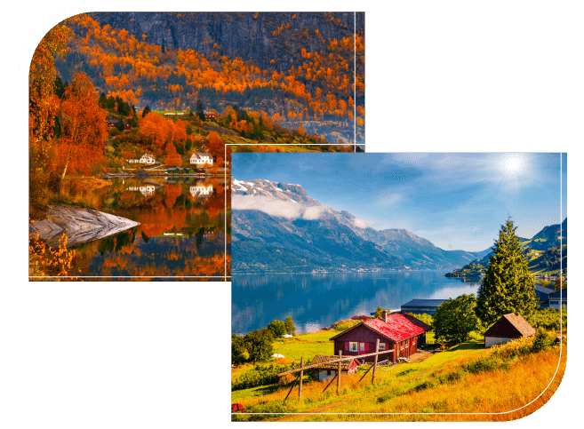
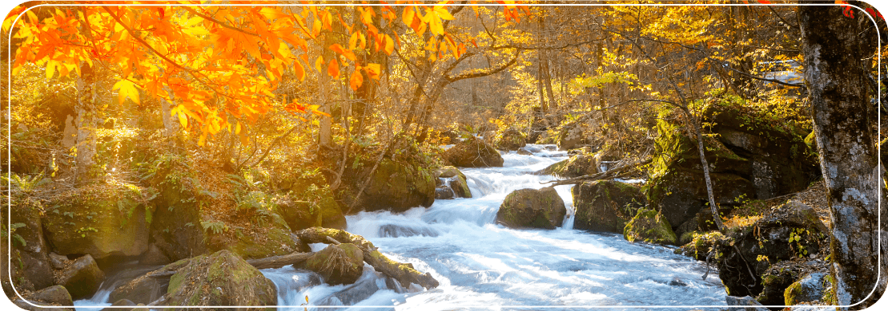
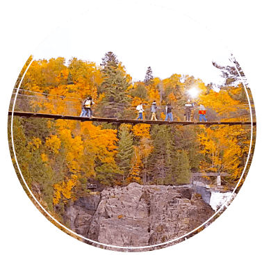
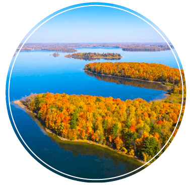
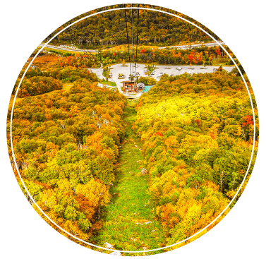
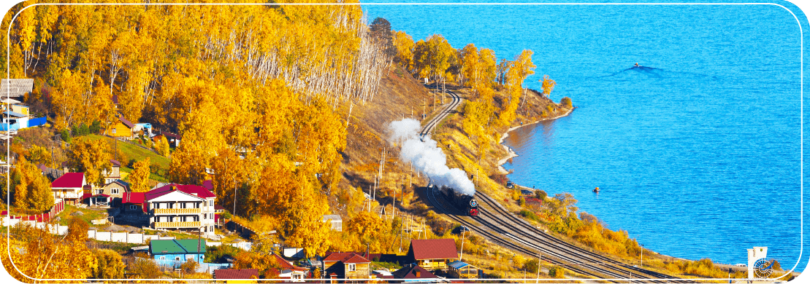

- 東 歐 EASTERN EUROPE
- 西 歐 WESTERN EUROPE
- 北 歐 NORDIC EUROPE

EASTERN EUROPE
東歐
走進東歐的秋景，一定會被動人的湖光山色吸引，克羅埃西亞的十六湖、科卡國家公園都以瀑布、湖泊著稱，每當秋天來臨，橙紅森林會和清澈水景相映成趣，未受開發的自然景觀讓旅人趨之若鶩。若是來到特里格拉夫芬卡峽谷，還能見證壯闊的山崖景致，美麗的景色絕對讓你快門按不停！

WESTERN EUROPE
西歐
西歐的秋天總是充滿童話氛圍，國王湖在紅葉點綴下湖水更顯湛藍，為這片世外桃源增添無限魅力。深藏群山中的新天鵝堡秋景同樣迷人，童話城堡矗立五彩斑斕的森林之中，讓人彷彿進入奇幻的世界。達人精選瑞士冰河列車玩法，穿梭阿爾卑斯山，將瑞士最美楓光一次盡收眼底。

NORDIC EUROPE
北歐
北歐秋季是攝影愛好者一致認同的浪漫美景！深入壯闊峽灣的寧靜氛圍，品味山脈與楓紅交織的迷人畫卷，包含哈丹格峽灣、索格納峽灣都是人氣景點！來到這裡一定不能錯過峽灣遊船、入住峽灣飯店，讓你近距離體驗大自然的鬼斧神工，陶醉峽灣中的溫柔秋風，享受開闊的山水風光！
日本的楓紅之美層次豐富，總是能捉住旅人的心。奧入瀨溪的溪流與紅葉相互輝映，潺潺流水聲宛如一首大自然交響曲。

搭乘森吉山紅葉纜車、立山黑部觀峰纜車，輕鬆翻越金黃與深紅交錯的山林，從高空飽覽森林漸層的色彩。漫步白神山地的山毛櫸林，沉浸於斑斕森林之美，這場秋天視覺饗宴，你絕對不能錯過。
美加東的極致秋色，是紅葉愛好者的夢想之境。

AMERICAS
聖安妮峽谷
聖安妮峽谷的瀑布湍急壯觀，周圍被群山楓紅包圍，構築出令人讚嘆的美景。

AMERICAS
千島群島
乘坐千島群島遊船，徜徉在紅葉倒映的清澈湖面，打卡季節限定的絕美楓紅。

AMERICAS
白山國家森林公園
占地三千多平方公里的白山國家森林公園，以壯闊山林聞名，紅葉鋪滿整片山野，感受秋風輕拂，彷彿走進一場金秋童話。
俄羅斯的秋天如詩如畫，金黃白樺與靜謐湖泊交織成夢幻景色。貝加爾湖畔的秋色層層堆疊，清澈湖水映照著無盡的金黃森林，寧靜而深遠。

搭乘環湖鐵道，穿梭於壯麗的湖岸與森林之間，沿途盡覽秋日風光。漫步白樺林間，感受金色樹海隨風搖曳的詩意氛圍，這場秋季限定的視覺饗宴，令人流連忘返。
中國的秋天如同一幅磅礴畫卷，錦繡大地處處充滿驚喜，每一步皆是詩意。
日本
北海道
神居空中楓葉纜車．奇跡紅葉谷光影秀．知床半島遊船溫泉饗宴．楓情北海道5天
$46,800起
函館山夜景．燒岳羊蹄山．五稜郭．伊達時代村．無邊際溫泉湯．秋戀北海道5天
$52,800起
紅葉旅情北海道道東溫泉美食7天．輕健行．天然紅毯美景．可愛綠球藻
$59,800起
東 北
金秋奧入瀨溪．長井線鐵道體驗．青森採蘋果．紅葉銀山溫泉．楓情百選東北7天
$73,800起
金秋奧入瀨溪．紅葉森吉山+藏王纜車．採果體驗．浪漫銀山溫泉．滿喫東北9天
$$75,800起
金秋奧入瀨溪．楓百選土津神社+弘前公園．採果體驗．浪漫銀山．滿喫東北9天
$$85,800起
北 陸
最長賞楓纜車．立山黑部．高山楓．採果．名古屋關東7天
$59,800起
東 京
波斯菊花海．麝香葡萄吃到飽．富士山纜車．關東秋遊5天
$34,800起
楓紅高尾山．河口湖楓葉季．箱根遊船．關東秋旬富士5天
$35,800起
京阪神
海之京都伊根天橋立・有馬溫泉・美山茅草屋・東福寺・楓紅關西5天
$42,800起
四國．山陰山陽
走訪海之京都・足立美術館・紅葉鱷淵寺・絕美楓紅關西山陰山陽７天
$62,800起